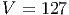

Capítulo 5
Solução de sistemas de equações não lineares
O método de Newton aplicado a encontrar a raiz  da função
da função  estudado na primeira área de nossa disciplina consiste em um processo iterativo.
Em cada passo deste processo, dispomos de uma aproximação
estudado na primeira área de nossa disciplina consiste em um processo iterativo.
Em cada passo deste processo, dispomos de uma aproximação  para
para  e
construímos uma aproximação
e
construímos uma aproximação  . Cada passo do método de Newton
envolve os seguintes procedimentos:
. Cada passo do método de Newton
envolve os seguintes procedimentos:
Observação:  é a equação da reta que
tangencia a curva
é a equação da reta que
tangencia a curva  no ponto
no ponto  .
.
Queremos, agora, generalizar o método de Newton a fim de resolver problemas
de várias equações e várias incógnitas, ou seja, encontrar  que
satisfazem as seguinte equações:
que
satisfazem as seguinte equações:
Podemos escrever este problema na forma vetorial definindo o vetor
![T
x = [x1,x2,...,xn]](main2579x.png) e a função vetorial
e a função vetorial

Exemplo 5.0.1. Suponha que queiramos resolver numericamente os seguinte
sistema de duas equações e duas incógnitas:
Então definimos

Neste momento, dispomos de um problema na forma  e precisamos
desenvolver uma técnica para linearizar a função
e precisamos
desenvolver uma técnica para linearizar a função  . Para tal, precisamos de
alguns conceitos do Cálculo II.
. Para tal, precisamos de
alguns conceitos do Cálculo II.
Observe que  pode ser escrito como
pode ser escrito como

Usamos a regra da cadeia
e
aproximamos as diferenças por derivadas parciais:

Portanto,
 | (5.1) |
Definimos então a matriz jacobiana por
 A
matriz jacobiana de uma função ou simplesmente, o Jacobiano de uma função
A
matriz jacobiana de uma função ou simplesmente, o Jacobiano de uma função
 é a matriz formada pelas suas derivadas parciais:
é a matriz formada pelas suas derivadas parciais:

Nestes termos podemos reescrever (5.1) como
 Esta expressão é chama de linearização de
Esta expressão é chama de linearização de  no ponto
no ponto  e generaliza a
linearização em uma dimensão dada por
e generaliza a
linearização em uma dimensão dada por 
 no ponto
no ponto  :
:

 é definida como o valor de
é definida como o valor de  em que a linearização
em que a linearização
 passa por zero.
passa por zero.